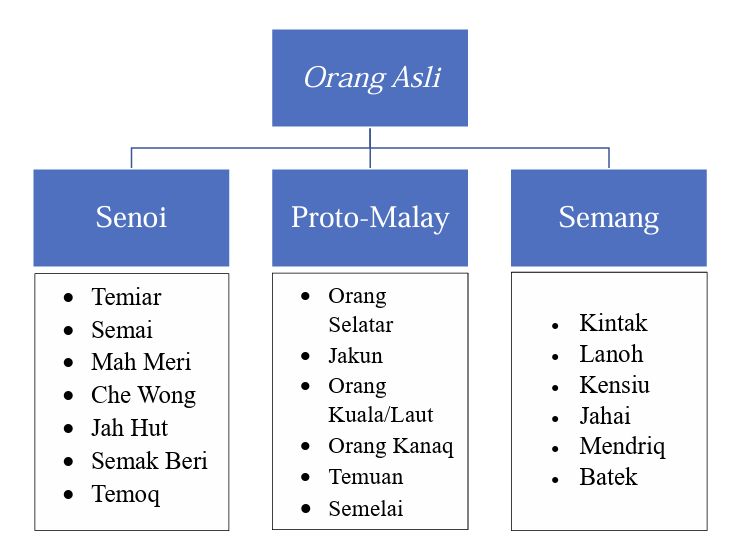

The indigenous people of Peninsular Malaysia, also known as the Orang Asli, is said to have migrated from China and Tibet through the mainland of Southeast Asia some 5000 years ago (Masron et al., 2013). The name Orang Asli, is a Malay Language term literally translated as “Original People”, hence referring to them as the original inhabitants of Peninsular Malaysia. Orang Asli is also the collective term used by anthropologists and administrators during the 19th century British colonial days in Malaya to refer to the three main tribes, namely, the Senoi, Proto-Malay (a.k.a. Aboriginal Malay) and Semang (a.k.a Negrito).
 Figure 1.1: The three tribes of Orang Asli in Peninsular Malaysia, and the ethnic groups of each tribeIt was only around the turn of the 21st century that ethnobotanists started associating and documenting specific Orang Asli ethnic groups to their own unique plant uses, and traditional knowledge and practices, specific to their geographical location. A chronology of such ethnic group- and location-targeted ethnobotanical studies is listed in Table 1.
Table 1.1: Chronology of ethnobotanical studies done on various ethnic groups of Orang Asli in Peninsular Malaysia.| Year | Author(s) | Tribe/Ethnic group | Location (State) |
|---|---|---|---|
| 1986 | Ong | Temuan | Kampung Padang in Hulu Langat district (Selangor) |
| 1999 | Hanum and Hamzah | Temuan | Ayer Hitam Forest in Puchong district (Selangor) |
| 2005 | Lin | Jah Hut | Kampung Keboi in Jerantut district (Pahang) |
| 2010 | Howell et al. | Jah Hut | Krau Wildlife and Forest Reserve (Pahang) |
| 2010 | Mohamad | Semelai | Tasek Bera (Pahang) |
| 2010 | Samuel et al. | Semang | Kampung Bawong in Sungai Siput district (Perak) |
| 2011a | Ong et al. | Temuan | Kampung Jeram Kedah in Beranang district (Negeri Sembilan) |
| 2011b | Ong et al. | Temuan | Kampung Guntor in Batu Kikir district (Negeri Sembilan) |
| 2011c | Ong et al. | Temuan | Kampung Tering in Johol district (Negeri Sembilan) |
| 2012 | Mohammad et al. | Kensiu | Lubuk Ulu Legong in Baling district (Kedah) |
| 2012a | Ong et al. | Jah Hut | Kampung Pos Penderas (Pahang) |
| 2012b,c | Ong et al. | Semai | Kampung Batu 16 in Tapah district (Perak) |
| 2013 | Anuar | Mah Meri and Temuan | Sungai Bumbun, Sungai Kurau, Sungai Rambai, Sungai Judah, Kepau Laut, Broga, Kolam Air, Tun Abdul Razak, Sungai Jang, Gurney, Hulu Tamu, Songkok, Bukit Lagong, Ulu Kuang (Selangor) |
| 2015 | Abdul Aziz and Zakaria | Lanoh | Lembah Lenggong (Perak) |
| 2018 | Misman | Jakun | Kampung Labong, Kampung Tanjung Tuan, Kampung Tanah Abang, Kampung Punan, Kampung Peta in Endau district (Johor) |
| 2018 | Lambin et al. | Mah Meri | Sungai Bumbun in Pulau Carey district (Selangor) |
| 2019 | Zaki et al. | Temiar | Kampung Pasik (Kelantan) |
| 2020 | Nadhirah | Semai | Kampung Batu 12 in Gombak district (Selangor) |
| 2020 | Nadhirah | Temuan | Kampung Busut Baru, Kampung Pulau Kempas in Kuala Langat district (Selangor) |
| 2020 | Nadhirah | Temuan | Kampung Tohor in Jelebu district (Negeri Sembilan) |
| 2021 | Ramli et al. | Temuan | Kampung Donglai Baru in Hulu Langat district (Selangor) |
| 2022 | Quinton | Temiar | Kampung Pincong in Pos Gob, Gua Musang district (Kelantan) |
| 2023 | Tharmabalan | Semai | Kampung Telimau in Cameron Highlands district (Pahang) |
| 2023 | Tharmabalan | Tharmabalan | Kampung Bukit Terang in Kampar district, Kampung Sat in Gopeng district (Perak) |